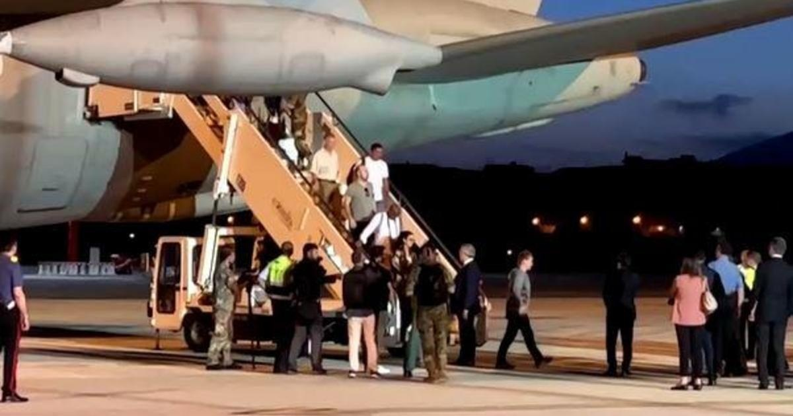

Americans flee Niger with European evacuees a week after leader detained in what U.S. hasn't called a coupJohannesburg, South Africa — A U.S. has suspended security cooperation with military forces in Niger and Americans have begun escaping the country, but U.S. officials have stopped short of describing the by his own elite guard as a coup. Under U.S. law, using that designation could require a complete halt to American security and economic assistance to the land-locked state, which has become a key democratic ally in northern Africa's tumultuous Sahel region, where the U.S. has significant counterterrorism-focused military operations. Americans escape on European evacuation flight U.S. National Security Council spokesman John Kirby told reporters this week that the Biden administration was monitoring the situation "literally by the hour" after what he called an "attempted power grab," but he said there was no indication of a direct threat to U.S. citizens in Niger and no evacuation operation was being carried out by the U.S. government. That didn't stop a group of Americans from boarding an evacuation flight to Italy, however, as that country and other European nations raced to get their citizens out of Niger. The first of three French planes sent to evacuate European nationals arrived back in Paris Tuesday night carrying more than 250 people, and an Italian plane, carrying Europeans along with 21 U.S. citizens, mainly from a Texas Christian group, landed in Rome early Wednesday morning. The evacuations quickly ramped up after demonstrators attacked the French embassy in Niger on Sunday. Neighbors warn coup leader, U.S. backs detained president Senior defense officials from the western African economic bloc ECOWAS, which includes Niger, were set to meet Wednesday in Abuja, Nigeria, to discuss what most of the world is referring to as the coup in Niger. The bloc has warned the military commander behind the putsch, who on Friday, that he has until August 6 to reinstate President Mohamed Bazoum to power. If Bazoum, who's effectively been under house arrest for a week, is not allowed to resume his work as the country's leader, ECOWAS will consider the use of force, the bloc said. On Sunday, ECOWAS announced tough sanctions against the coup leaders, as well as on all trade and financial transfers between Niger and its 14 other member states. The military junta now ruling Niger has said it will defend against any "acts of aggression" by ECOWAS, and the regional bloc's position was not completely unified. The rebellions generals are supported by the military regimes in Mali and Burkina Faso, both also ECOWAS members which have said they'd treat an attack on Niger as a declaration of war on them, too. Secretary of State Antony Blinken spoke with Bazoum by phone on Tuesday and conveyed the U.S. government's "unwavering support" for the Nigerien president and his country's democracy and its people, according to the State Department. Sources have told CBS News that neither the U.S. nor the French militaries have plans to evacuate their soldiers at this time. U.S. troops number close to 1,000 in the country, while former colonial power France has about 1,500 deployed. The U.S. operates out of two jointly-run military bases in Niger. djOne U.S. official told CBS News the challenge to Niger's elected leader came unexpectedly, and that it was worrying development in a . An African region plagued by coups and extremism The July 26 toppling of Niger's government was only the most recent coup in a volatile, insurgency-plagued region. There have been nine coups over the last three years in West and Central Africa, most recently the ones that brought the current regimes to power in and . Niger alone has had four coups since it gained independence from France in 1960. Bazoum has been the nation's president since a peaceful transition of power in 2021 following his election. Despite his detention on July 26, Bazoum has been on the phone with foreign leaders and he was recently photographed with Gen. Mahamat Idriss Deby Itno, the leader of Chad who traveled to Niger's capital Niamey at the behest of ECOWAS. Abdourahmane Tchiani, 62, the head of the presidential guard, declared himself Niger's new leader in a national television address on Friday, giving himself the title "President of the National Council for the Safeguard of the Homeland." He claimed the takeover was necessary to "avoid the demise of the country," and then he suspended the Niger's constitution. Several Russian flags were seen at pro-junta demonstrations on Sunday, prompting speculation that Russia or its Wagner Group private mercenary army might have had a hand in the coup, but Kirby told journalists the U.S. saw "no indication that Russia was behind this in anyway." It's believed that Wagner has close to 1,000 mercenaries operating in Mali, which borders Niger. for more features. |
 |